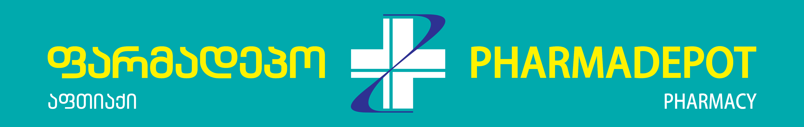
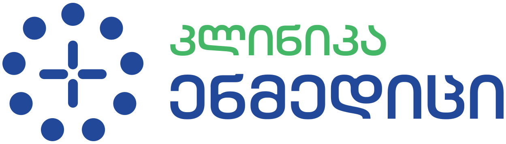

სამედიცინო SEO, რომელიც თქვენს ჩანაწერებს პაციენტებით ავსებს
ვაერთიანებთ სამედიცინო ინდუსტრიის ექსპერტიზას, AI-ზე მორგებულ SEO მეთოდოლოგიასა და რეგიონალურ ბაზარს — რომ თქვენს კლინიკას პაციენტებით ავსოთ.
GBP Calls
+40%
Todua Clinic
Organic Traffic
+340%
Pharmadepot
Keywords Top 3
47
Smile Studio
Cost per Lead
-35%
საშუალო
ისინი უკვე ჩვენი პარტნიორები არიან





რატომ შეიცვალა სამედიცინო SEO 2025-ში სრულად
AI Overviews, ნულოვანი დაკლიკებები და პაციენტების ქცევის ცვლილება — ძველი SEO აღარ მუშაობს.
70%
ნულოვანი დაკლიკების სამედიცინო ძიებები
პაციენტები პასუხს SERP-ში ღებულობენ — თქვენი საიტის გარეშე.
52%
AI Overviews სამედიცინო ძიებებში
Google AI საკუთარ პასუხს აჩვენებს — GEO აუცილებელია.
77%
პაციენტები ეძებენ ვიზიტამდე
ონლაინ რეპუტაცია პაციენტის გადაწყვეტილებას წყვეტს.
სამედიცინო SEO სერვისები
ყოველი სერვისი მორგებულია ჯანდაცვის სპეციფიკაზე — YMYL, E-E-A-T, სამედიცინო რეგულაციები და პაციენტის ქცევა.
ლოკალური SEO კლინიკებისთვის
Google Business Profile ოპტიმიზაცია, ლოკალური ციტირებები, მრავალფილიალიანი მენეჯმენტი. პაციენტები თქვენს კლინიკას პირველ რიგში დაინახავენ.
სამედიცინო კონტენტ სტრატეგია
E-E-A-T შესაბამისი, ექიმის მიერ რევიუირებული კონტენტი. სამედიცინო ბლოგები, სერვის გვერდები, პაციენტის FAQ — ყველაფერი YMYL სტანდარტით.
ტექნიკური SEO ჯანდაცვისთვის
Core Web Vitals ოპტიმიზაცია, MedicalWebPage სქემა მარკაპი, HIPAA-თავსებადი საიტის არქიტექტურა და სიჩქარის გაუმჯობესება.
AI ძიების ოპტიმიზაცია / GEO
ChatGPT, Gemini, Perplexity — AI ძიებაში ხილვადობის მაქსიმიზაცია. თქვენი კლინიკა AI-ს პასუხებში ჩნდება.
პაციენტის შეფასებები & რეპუტაცია
რევიუების გენერაცია, მონიტორინგი და პასუხები. Google, Facebook, Trustpilot რეიტინგების მართვა პაციენტების ნდობისთვის.
მრავალენოვანი SEO
ქართული, ინგლისური, არაბული, რუსული — hreflang იმპლემენტაცია, ლოკალიზებული კონტენტი და საერთაშორისო პაციენტების მოზიდვა.
სპეციალობების მიხედვით
სტომატოლოგიური კლინიკებისთვის ვოპტიმიზებთ თითოეულ პროცედურას (იმპლანტაცია, ვინირები, ბრეკეტები, გათეთრება) ცალკე ლენდინგ გვერდით. ლოკალური SEO, Google Maps-ში პირველობა და პაციენტის რევიუების სისტემა — Smile Studio-ს მაგალითზე Top 3 კეთილსინდისიერ სამედიცინო keyword-ებზე.
რეალური შედეგები რეალური კლინიკებისთვის
ციფრები, რომლებიც ჩვენი კლიენტების ზრდას ასახავს.
+40%
GBP ზარები
Todua Clinic
Top 3
სამედიცინო keywords
Smile Studio
+340%
ორგანული ტრაფიკი
Pharmadepot
6+
კლინიკა კლიენტი
საქართველოში
10xSEO vs. გენერიკული სააგენტოები
რა გამოგვარჩევს სამედიცინო SEO-ში
| კრიტერიუმი | 10xSEO | გენერიკული |
|---|---|---|
| ჯანდაცვის ექსპერტიზა | ✓ | ✗ |
| YMYL/E-E-A-T შესაბამისობა | ✓ | ✗ |
| სამედიცინო კონტენტ რაიტერები | ✓ | ✗ |
| მრავალენოვანი SEO | ✓ | ~ |
| ლოკალური SEO კლინიკებისთვის | ✓ | ~ |
| AI ძიების ოპტიმიზაცია (GEO) | ✓ | ✗ |
| გამჭვირვალე ფასები | ✓ | ✗ |
ჩვენი პროცესი
5 ნაბიჯი თქვენი კლინიკის ონლაინ ზრდისთვის
სამედიცინო SEO აუდიტი
საიტის, GBP-ის, კონტენტისა და კონკურენტების სრული ანალიზი.
სტრატეგია & Keyword კვლევა
სამედიცინო keyword-ების კვლევა, კონტენტ პლანი, ROI პროგნოზი.
იმპლემენტაცია
ტექნიკური SEO, სქემა მარკაპი, GBP, საიტის ოპტიმიზაცია.
კონტენტი & ავტორიტეტი
E-E-A-T კონტენტი, ექიმის რევიუ, ბექლინკები, PR.
რეპორტინგი & ოპტიმიზაცია
ყოველთვიური ანგარიშები, A/B ტესტები, მუდმივი გაუმჯობესება.
სამედიცინო SEO აუდიტი
საიტის, GBP-ის, კონტენტისა და კონკურენტების სრული ანალიზი.
სტრატეგია & Keyword კვლევა
სამედიცინო keyword-ების კვლევა, კონტენტ პლანი, ROI პროგნოზი.
იმპლემენტაცია
ტექნიკური SEO, სქემა მარკაპი, GBP, საიტის ოპტიმიზაცია.
კონტენტი & ავტორიტეტი
E-E-A-T კონტენტი, ექიმის რევიუ, ბექლინკები, PR.
რეპორტინგი & ოპტიმიზაცია
ყოველთვიური ანგარიშები, A/B ტესტები, მუდმივი გაუმჯობესება.
10xSEO-მ ჩვენი კლინიკის ონლაინ ხილვადობა სრულად შეცვალა. GBP ზარები 40%-ით გაიზარდა, ხოლო ორგანული ტრაფიკი თითქმის გასაოთხმაგდა. პროფესიონალიზმი და სამედიცინო სფეროს ცოდნა განსაკუთრებულია.
დავით ტოდუა
დამფუძნებელი, Todua Clinic
ხშირად დასმული კითხვები
ყველაფერი, რაც სამედიცინო SEO-ზე უნდა იცოდეთ
სამედიცინო SEO არის საძიებო სისტემების ოპტიმიზაციის სპეციალიზებული მიმართულება ჯანდაცვის სექტორისთვის. ის მოიცავს YMYL (Your Money Your Life) კონტენტის ოპტიმიზაციას, E-E-A-T სტანდარტების დაცვას, სამედიცინო სქემა მარკაპს, Google Business Profile ოპტიმიზაციას, პაციენტების მოზიდვაზე ორიენტირებულ კონტენტ სტრატეგიასა და ლოკალურ SEO-ს.
სამედიცინო SEO მოითხოვს YMYL/E-E-A-T შესაბამისობას, ექიმის მიერ დამტკიცებულ კონტენტს, სამედიცინო ტერმინოლოგიის ცოდნას და სპეციალიზებულ სქემა მარკაპს (MedicalWebPage, Physician, MedicalCondition). Google ჯანდაცვის კონტენტს მკაცრად აფასებს — არასწორ ინფორმაციას სჯის.
GBP ოპტიმიზაციის შედეგები 2-4 კვირაში ჩანს (ზარები, მიმართულებები). ლოკალური SEO-ს შედეგები 2-3 თვეში მოდის. ორგანული ტრაფიკის მნიშვნელოვანი ზრდა 4-6 თვე სჭირდება. YMYL სფეროში ავტორიტეტის სრული აშენება 6-12 თვემდე გრძელდება.
სამედიცინო SEO პაკეტები 1880 ლარიდან იწყება. ფასი დამოკიდებულია კლინიკის მასშტაბზე, ფილიალების რაოდენობაზე, სერვისების სპექტრზე და კონკურენციის დონეზე. გვაქვს სხვადასხვა პაკეტი სტარტაპ კლინიკებიდან მრავალფილიალიან ქსელებამდე. დაგვიკავშირდით უფასო კონსულტაციისთვის — გრძელვადიანი კონტრაქტი არ მოითხოვება.
დიახ, ჩვენი კონტენტი და სტრატეგიები სრულად შეესაბამება სამედიცინო რეგულაციებს. ყველა სამედიცინო კონტენტი გადის ექიმის რევიუს, ვიცავთ E-E-A-T სტანდარტებს და არ ვაწარმოებთ არალეგიტიმურ სამედიცინო კლემებს.
ვემსახურებით სტომატოლოგიას, პლასტიკურ ქირურგიას, დერმატოლოგიას, ფერტილობის კლინიკებს, საავადმყოფოებს, ფსიქოთერაპიას, ოფთალმოლოგიას, კარდიოლოგიას, ორთოპედიას და სხვა სპეციალობებს. თითოეულისთვის გვაქვს ინდუსტრია-სპეციფიკური სტრატეგიები.
დიახ, აქტიურად ვმუშაობთ ორივე ბაზარზე. საქართველოში ვმუშაობთ ქართულ და ინგლისურ ენებზე, UAE-ში — ინგლისურ და არაბულ ენებზე. გვაქვს მრავალენოვანი SEO-ს სრული გამოცდილება hreflang-ის ჩათვლით.
GEO (Generative Engine Optimization) არის AI ძიების ოპტიმიზაცია. 2025-ში AI Overviews სამედიცინო ძიებების 52%-ში ჩნდება. GEO უზრუნველყოფს თქვენი კლინიკის ხილვადობას ChatGPT, Gemini, Perplexity და სხვა AI პლატფორმებში.
კრიტიკულად მნიშვნელოვანია. პაციენტების 77% ეძებს შეფასებებს ვიზიტამდე. Google-ის ალგორითმი აქტიურად ითვალისწინებს რეიტინგებს ლოკალურ რანჟირებაში. რევიუ მენეჯმენტი — მოთხოვნა, მონიტორინგი, პასუხები — ჩვენი სერვისის ნაწილია.
დიახ, გვაქვს სპეციალიზებული გამოცდილება მრავალფილიალიან ჯანდაცვის ქსელებთან. თითოეული ფილიალისთვის ვქმნით ცალკე GBP პროფილს, ლოკალურ ლენდინგ გვერდებს, მდებარეობაზე მორგებულ კონტენტსა და ლოკალური ციტირების სტრატეგიას.
გთავაზობთ ყოველთვიურ დეტალურ ანგარიშს, რომელიც მოიცავს: ორგანული ტრაფიკის დინამიკა, keyword პოზიციები, GBP მეტრიკები (ზარები, მიმართულებები, ნახვები), კონვერსიები, AI ხილვადობა და ROI ანალიზი. ასევე გაქვთ წვდომა ლაივ დეშბორდზე.
დიახ, ტელემედიცინის SEO ჩვენი ერთ-ერთი მზარდი მიმართულებაა. ვოპტიმიზებთ ონლაინ კონსულტაციების გვერდებს, ვირტუალური ვიზიტის ლენდინგებს, ტელემედიცინის პლატფორმებსა და ონლაინ ჯავშნის სისტემებს.
ორივე მნიშვნელოვანია, მაგრამ სხვადასხვა მიზანს ემსახურება. PPC სწრაფ შედეგებს იძლევა, მაგრამ ძვირია და შეწყვეტისთანავე ტრაფიკი ქრება. SEO გრძელვადიან, მდგრად ტრაფიკს უზრუნველყოფს. სამედიცინო სფეროში SEO-ს ROI საშუალოდ 3-5x მეტია PPC-ზე 12 თვის პერსპექტივაში.
პაციენტების 46% ძიებებს ლოკალური ინტენტით აკეთებს — 'კლინიკა ჩემთან ახლოს', 'სტომატოლოგი თბილისი'. ეს ტიპის ძიებები 150%-ით გაიზარდა ბოლო 2 წელში. GBP ოპტიმიზაციის გარეშე კლინიკა უხილავია Google Maps-ში და ლოკალურ ძიებაში.
დიახ, განსაკუთრებით სამედიცინო ტურიზმისთვის. ვოპტიმიზებთ საერთაშორისო პაციენტების მოზიდვაზე ორიენტირებულ კონტენტს, hreflang იმპლემენტაციას, მულტი-რეგიონალურ SEO სტრატეგიებსა და საერთაშორისო ციტირებებს.
უფასო სამედიცინო SEO ჩეკლისტი 2026
50+ პუნქტი — ტექნიკური SEO, GBP ოპტიმიზაცია, კონტენტ სტრატეგია, E-E-A-T, ლოკალური SEO და GEO. უფასოდ.
სპამს არ ვაგზავნით. მხოლოდ SEO რჩევები.
მზად ხართ ჩანაწერების ავსებისთვის?
დაჯავშნეთ უფასო 30-წუთიანი კონსულტაცია და გაიგეთ, როგორ შეგვიძლია თქვენი კლინიკის ონლაინ ხილვადობის გაზრდა.
საშუალო პასუხის დრო: 10 წუთი სამუშაო საათებში